Developing AI literacy as a critical and situated mode of artistic research through pedagogical practice at the Frank Mohr Institute.
Within the Professional Doctorate Kunst + Creatief, teaching is not ancillary to research — it is a site of research. This portfolio documents a four-year trajectory of developing, iterating, and studying an AI course for master's students in fine arts and design.
Commissioned by the Frank Mohr Institute — the master's division of Minerva Art Academy at Hanze University — I developed and taught a series of courses on AI for creative practice across four programmes: MADtech (Media, Art, Design & Technology), iRap (Inter-relational Art Practices), MAPS (Materials and Practices), and Painting.
This pedagogical practice became integral to my research within the Lectorate Image in Context, allowing me to investigate how emerging artists define, engage with, and critically examine artificial intelligence — both as a tool and as a subject of artistic inquiry.
The teaching-research link operated through a triangulated methodology: structured questionnaires administered before and after the course, curatorial reflection during the Encounters in Artistic Research symposium, and ongoing dialogue through studio visits and group discussions.
Evolving from a 1EC introduction to a comprehensive 2EC programme and back to a focused 1EC format.
MADtech, iRap, MAPS, and Painting — engaging students across diverse artistic practices.
Each iteration refined the pedagogical approach, expanding both the scope and the research methodology embedded within the course structure.
The inaugural course introduced master's students to AI as a creative tool and subject of critical inquiry. Focused on building foundational understanding of machine learning, generative models, and their implications for artistic practice.
Expanded course open to all four master's programmes, shifting toward a discursive, practice-embedded approach. Introduced the structured questionnaire as a research instrument administered at the start and end of the course, beginning the triangulated research methodology.
Second iteration of the discursive AI course, with a fully refined triangulated research methodology integrating data collection directly into the course structure. Results from this iteration formed the basis of the P+ARTS Naples paper.
The final iteration: a focused, practice-oriented course consolidating the insights from three years of teaching and research. Emphasis on hands-on creative workflows and autonomous AI-integrated artistic practice.

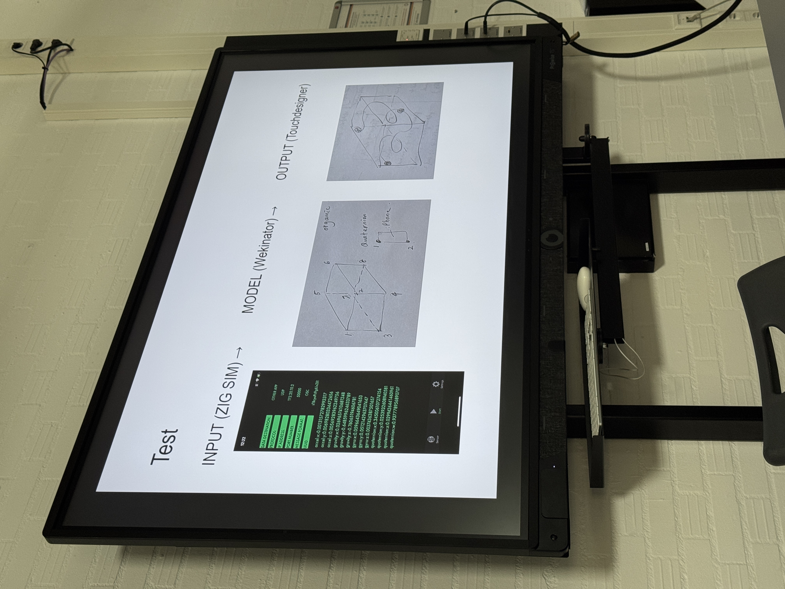


A symposium organized in collaboration with the Lectorate Image in Context, where selected student works from the AI course were curated and presented as artistic research — extending the pedagogical space into an epistemic one.
After each course iteration, a selection of student works was invited to be presented at the Encounters in Artistic Research symposium — an annual event organized with the Lectorate Image in Context at the Minerva Art Academy.
This curatorial step was not merely presentational. It functioned as a second phase of research: through dialogue with students, fellow researchers, and an audience, the works were re-examined as contributions to artistic research on AI. The curation process itself became a method of inquiry — what the P+ARTS paper frames as curation as research.
Student works addressed themes including algorithmic opacity, speculative futures, embodied performance with machine learning, feminist critiques of AI-generated body images, and the creative potential of older AI systems in painting practice.
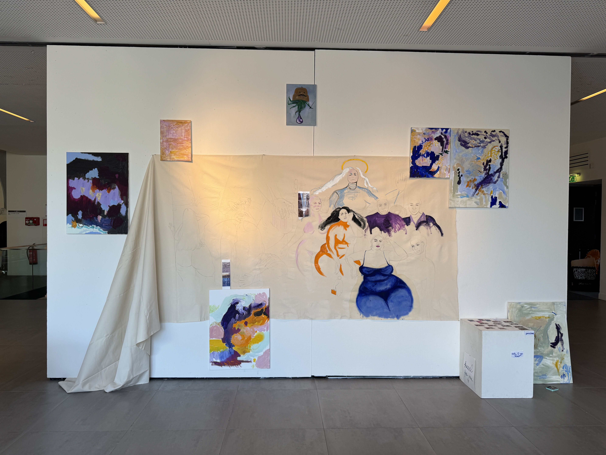

Students engaged in extended conversation about their works' relationship to AI, positioning them not just as art objects but as research contributions that interrogate algorithmic systems.
Bringing together students from MADtech, iRap, MAPS, and Painting created productive friction between technology-native and traditional practices, revealing diverse approaches to AI engagement.
The symposium provided a third data point in the triangulated methodology — alongside questionnaires and studio visits — offering public, dialogic reflection on the teaching-research process.
A triangulated approach combining structured questionnaires, curatorial reflection, and dialogue-based analysis to investigate how emerging artists conceptualize and engage with AI.
Administered at the outset and conclusion of each course, yielding both quantitative ratings and qualitative responses. Tracks shifts in how students define, use, and imagine AI across the course duration.
Selected student works exhibited at the Encounters symposium, where curation functions as epistemic practice. Works are examined through dialogue as research contributions addressing algorithmic opacity, speculative futures, and critical embodiment.
Studio visits and group discussions throughout the course provide ongoing qualitative data. These dialogues capture the evolving relationship between students' personal AI use and their developing artistic practice.
Students frequently used AI personally (predictive text, image generation) but showed hesitant and exploratory engagement in artistic practice. Their definitions of AI ranged from algorithmic to metaphorical, revealing a pervasive conceptual ambiguity that became the starting point for pedagogical intervention.
Students rejected both dystopian and utopian AI narratives in favour of pragmatic views. They wanted to use AI as a tool without subscribing to either Silicon Valley techno-optimism or apocalyptic scenarios — supporting a grounded, critical approach to emerging technologies.
Students expressed desires for AI that exceeded current technical literacy — such as creative partnership, emotional support, or systemic disruption. These imaginative projections underscore the need to embed critical literacy throughout the learning process.
The research proposes reframing AI literacy to position artists not as users or co-creators of AI, but as interpreters of algorithmic systems. This shifts focus toward epistemological inquiry and participatory critique, enabling confident and reflexive engagement with AI.
International conference on Artistic Research at the Accademia di Belle Arti di Napoli, October 2025. Presentation of the research paper connecting teaching practice to artistic research methodology.
From Conceptual Ambiguity to Critical Engagement: AI Literacy as Artistic Research — this paper presents AI literacy as a critical and situated mode of Artistic Research, emerging from pedagogical experimentation and qualitative research within the master's-level AI course at Frank Mohr Institute.
The contribution is based on the triangulated methodology combining the structured questionnaire, curatorial reflection on student artworks at the Encounters symposium, and dialogue-based analysis. Conducted during the third iteration of the course, the study investigates how emerging artists define, engage with, and imagine artificial intelligence in both personal and creative contexts.
The paper proposes three key parameters for a literacy-driven, participatory methodology: (1) begin with conceptual clarification; (2) embed critical literacy throughout the learning process; and (3) use curation as research. These strategies aim to move artists from hesitant experimentation to confident, critical, and reflexive engagement with AI as both medium and subject of inquiry.
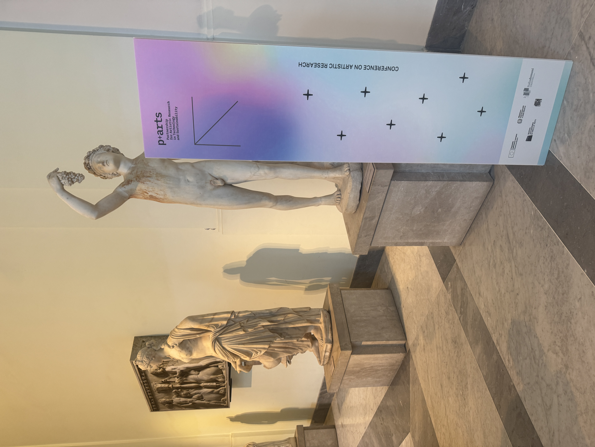
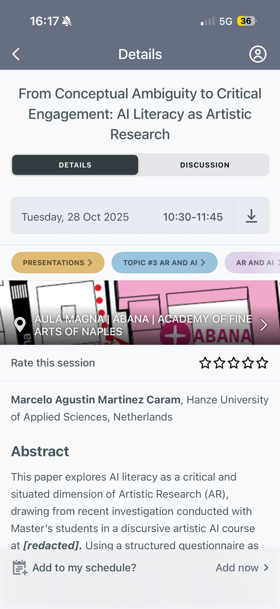
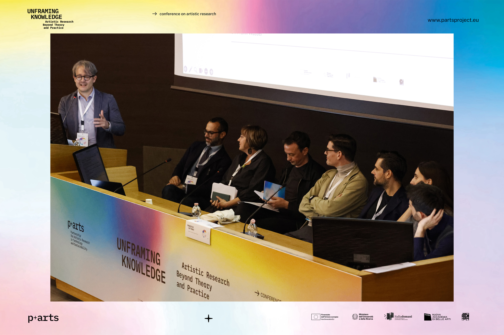
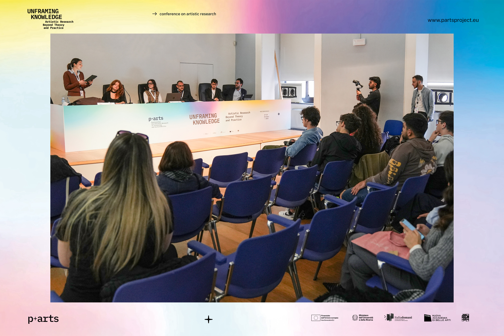
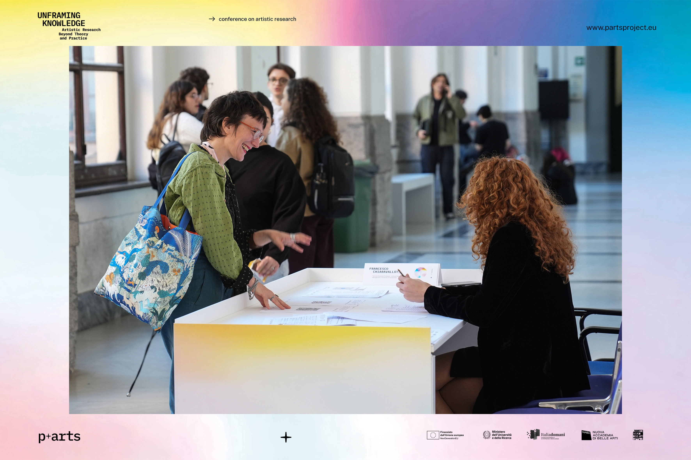
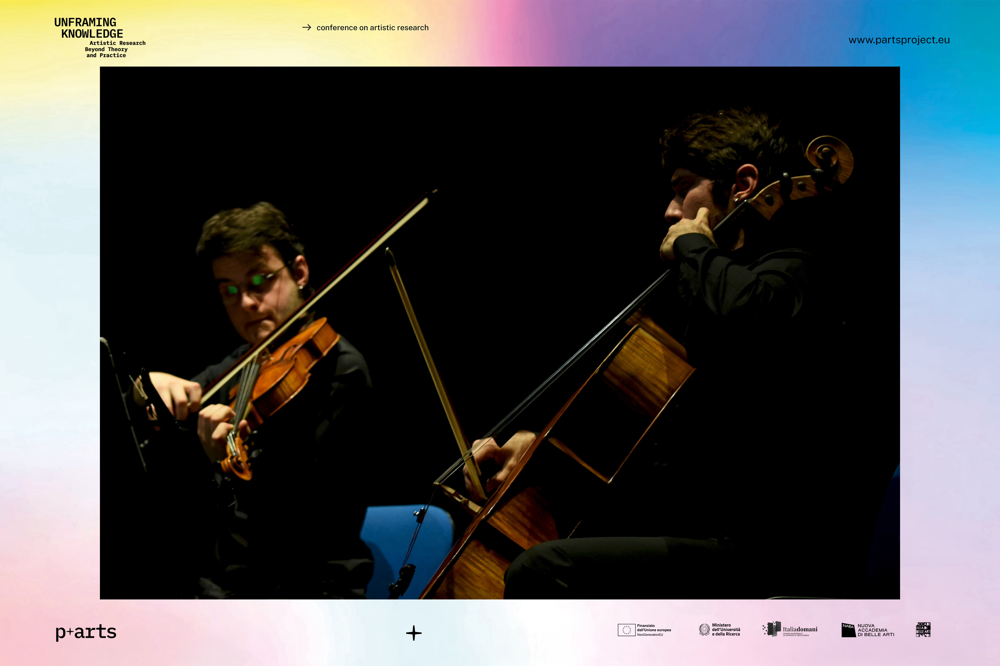
A selection of student projects developed during the AI courses, demonstrating diverse artistic engagements with AI across the four master's programmes — from painting and performance to digital art and machine learning systems.

Investigating how AI affects body representation, using generative models to critique fashion imagery — 2024 cohort.

Exploring node-based generative systems through ComfyUI to develop new visual languages — 2024 cohort.

Using non-technological means to expose inherent biases across proprietary AI models — 2024 cohort.

Exploring dialogue between traditional painting and older AI systems to create new aesthetic vocabularies — 2024 cohort.
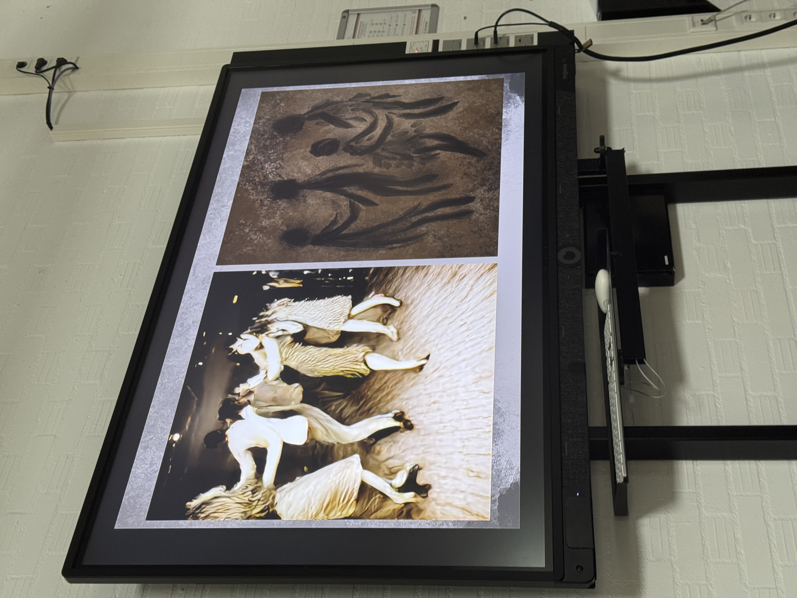
Developing ML algorithms to investigate how AI perceives biological and artificial life growth, embodied through performance — 2025 cohort.
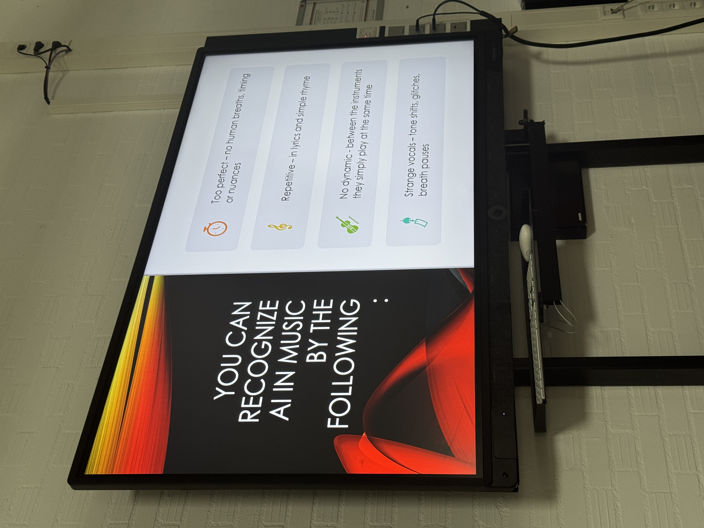
Using advanced AI systems in 3D modelling to investigate how AI understands human emotions and micro-expressions — 2025 cohort.
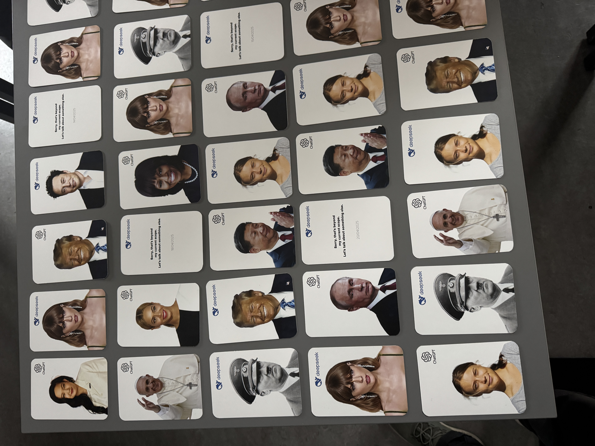


An overview of teaching, research dissemination, and related activities undertaken throughout the Professional Doctorate trajectory.
1 EC course · Frank Mohr Institute (MADtech)
2 EC · Discursive AI · Frank Mohr Institute (MADtech, iRap, MAPS, Painting) · Introduced research questionnaire
Curated student works from AI course · Lectorate Image in Context · Minerva Art Academy
Attended with focus on approaches to teaching AI in art and design education · NABA, Milan · 20–23 Nov 2024
2 EC · Discursive AI · Frank Mohr Institute (MADtech, iRap, MAPS, Painting) · Full triangulated methodology
Paper presentation: "From Conceptual Ambiguity to Critical Engagement" · Accademia di Belle Arti di Napoli
Paper — publication forthcoming
1 EC course · Frank Mohr Institute · Final iteration
Coordination of student participation in lectorate research activities (KCKS)